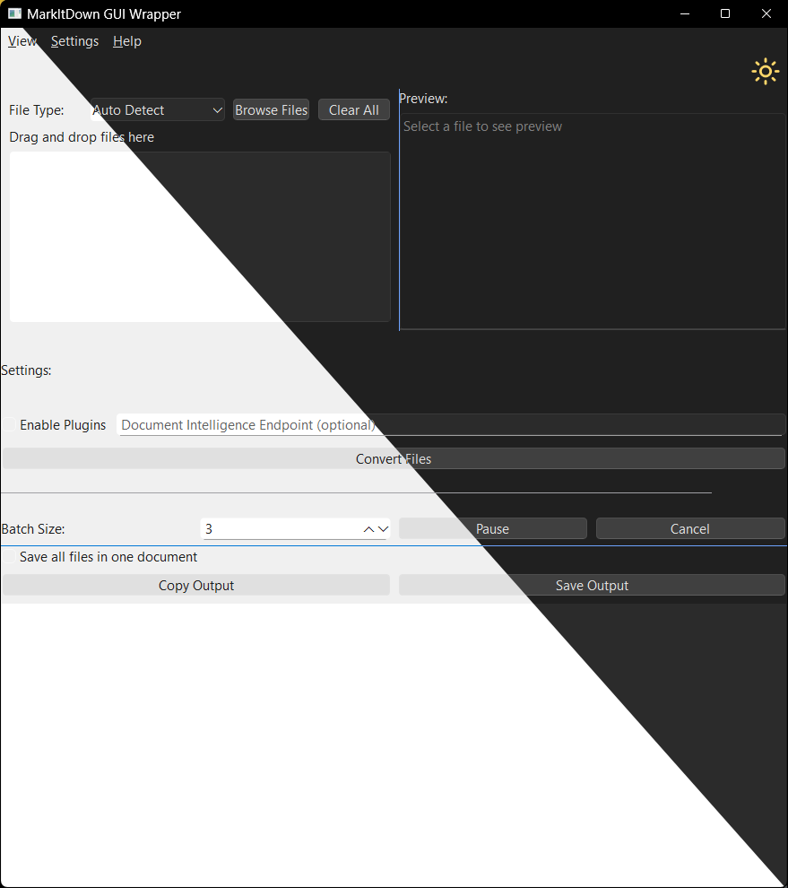

MarkItDown GUI Wrapper
A feature-rich GUI wrapper for MarkItDown, built with PySide6. Easily convert files to markdown using drag & drop.
 ## Features
- 📂 File Management:
- Drag & Drop for batch processing
- File type filtering
- Recent files history
- Batch processing with pause/resume
- 🎨 User Interface:
- Dark/Light theme support
- Preview panel
- Progress tracking
- Keyboard shortcuts
- ⚙️ Advanced Options:
- Format customization (headers, tables)
- Auto-save and backup
- Enable plugins
- Document Intelligence API support
- 🛠️ Output Options:
- Save all in one file or separately
- Choose output directory
- Quick copy & paste
- Preview before saving
Installation
You can download the precompiled executable from the Releases or build it from source. For that just follow the instructions below.
Prerequisites
- Python 3.10+
- Install dependencies:
pip install -r requirements.txtRun the App
python -m markitdowngui.mainKeyboard Shortcuts
Ctrl+O: Open FilesCtrl+S: Save OutputCtrl+C: Copy OutputCtrl+P: Pause/ResumeCtrl+B: Begin ConversionCtrl+L: Clear ListCtrl+K: Show ShortcutsEsc: Cancel Conversion
Build a Standalone Executable
First activate the development environment:
uv pip install -e .[dev]Use PyInstaller:
pyinstaller --clean --onefile --windowed -n MarkItDown markitdowngui/main.pyLicense
Licensed under MIT.
Note: PySide6 uses LGPLv3, requiring dynamic linking.
Contributing
Contributions are welcome! Please follow these steps to contribute:
- Fork the repository and create a new branch for your feature or bug fix.
- Set up the development environment:
It is recommended to use a virtual environment.
This project uses
uvfor package management.To install all dependencies, including for development and testing, run:
uv pip install -e .[dev]
- Make your changes.
- Run the tests to ensure everything is working correctly:
sh pytest - Submit a pull request with a clear description of your changes.
Credits
- MarkItDown (MIT License)
- PySide6 (LGPLv3 License)